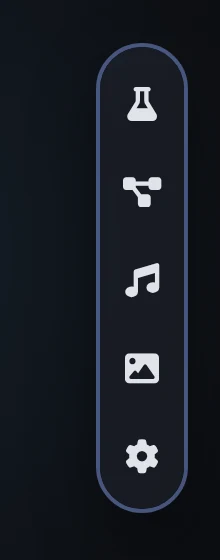
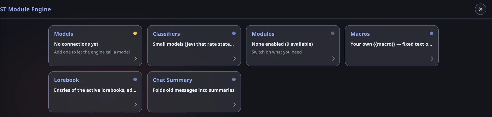
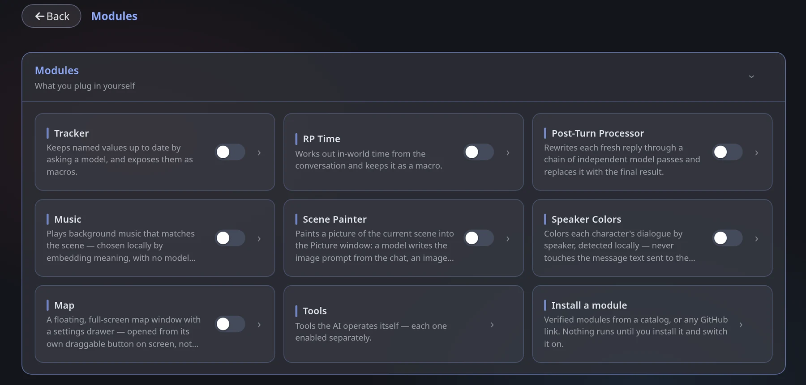

Quick start
This takes about five minutes. You will install the engine, connect a model and see your first tracker update on its own.
Install the extension
In SillyTavern open Extensions → Install extension, paste https://github.com/IAmiGOI/Module-Engine and install. Reload the page — the loading screen now says ST × ME.
Details and troubleshooting: Install.
Open the engine
Hover the thin glowing line on the right edge of the screen. The dock slides out — its top button (the flask) opens the engine. On the very first launch the guide Mea opens by herself.

The dock, top to bottom: engine, memory graph, music, picture, engine settings.
The engine opens as a set of tiles:

Connect a model
Open the Models tile and press + SillyTavern main connection (or choose the same option in Mea's chat). The engine now reuses whatever SillyTavern is connected to — no key needed.
Prefer a separate cheaper model? Press + Add connection and fill in the format, endpoint, key and model name. See Model connections.
Switch on two modules
Open the Modules tile and switch on Tracker and RP Time. They are the easiest to understand and need nothing else.

Make your first tracker
Open Tracker's settings and press + Add tracker. Rename it status, pick your connection, add a field location with the hint "where the scene takes place", set Poll when to after every reply (the default is Manual only) and press Save. Now chat — a small window shows the location and updates by itself. Full walkthrough: Tracker.
Where to go next
| I want to… | Read |
|---|---|
| Fit a very long chat into the context | Chat Summary |
| Keep track of who is connected to what | Memory graph |
| Clean up the writing of every reply | Post-Turn Processor |
| Illustrate scenes | Scene Painter |
| Take control of what is sent to the model | Prompt Manager |
| Use a tracker value inside my prompts | Lorebook & Macros |
| Move to another device | Sync, backup & updates |
Stuck? Almost every problem is a model connection that is down or rejected — its last error is shown under it in the Model connections card. See Troubleshooting.